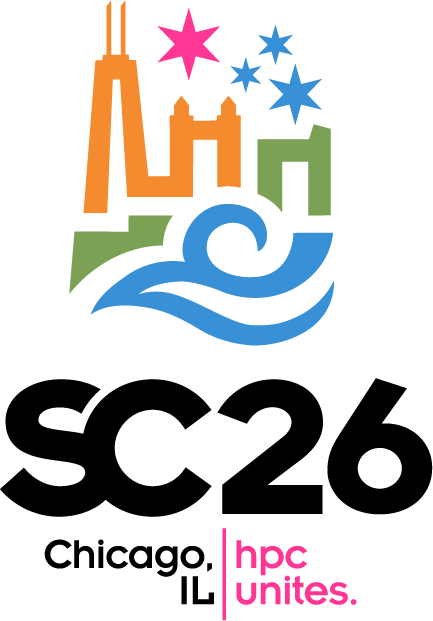
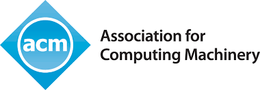

Workshop held in conjunction with SC26 - November 15 - 20, 2026 - Chicago, Illinois, USA

Held in conjunction with SC26: The International Conference for High
| Time (CST) | Speaker | Title |
|---|---|---|
| 9:00 | James Brodman | Welcome |
| 9:05 | Andy Terrel | CUDA Tile |
| 10:00 | Coffee | Break |
| 10:30 | Michael Kuron | Zero-Overhead Polymorphism on GPGPUs with LLVM Just-in-Time Compilation |
| 11:00 | Benjamin Glick | Multilingual GPU Communication Libraries with LLVM Bitcode and CUDA LTOIR |
| 11:30 | Ivan R. Ivanov | GPU Code Generation for OpenACC Kernels construct in a Modern MLIR-Based Compiler |
| 12:00 | Razvan Lupusoru, Ivan Ivanov | Bringing OpenACC to LLVM’s Offload Stack: Dialect Contracts, Lowering Boundaries, and a First-Class ACC Runtime |
| 12:30 | Lunch | Break |
| 2:00 | James Brodman | Afternoon Session Introduction |
| 2:02 | Smeet Chheda | Learning When to Unroll-and-Unmerge on GPUs: Experiences with Reinforcement Learning in LLVM | 2:09 | David Rivera, Konstantinos Parasyris | GPU Device Compilation in ClangIR: Lowering CUDA and HIP Kernels Through the CIR Pipeline | 2:16 | Prakanth Thilakaraj | Code Generation with MLIR for the OPS Structured-Mesh DSL | 2:23 | Addison Alvey-Blanco | Platform-Agnostic Kernel Fusion Pipeline for Linear Algebra Kernels in MLIR | 2:30 | Marek Rouven Beckmann | Who You Gonna CALL? Static Whole-Program Call Graphs for Fortran | 2:37 | Damian Rouson | Evaluation of LLVM Flang for Production HPC Applications and Modern Fortran Features | 2:44 | Ari Rasch | Linalg vs MDH: Why Reduction Semantics Matter | 2:51 | Emmanuel Jeannot | An LLVM Pass for Automatic Skeletonization of MPI Applications | 2:58 | James Brodman | Short Talks Wrap-up | 3:00 | Coffee | Break |
| 3:30 | Juan Salamanca | A Production Compiler Implementation of Hardware Transactional Memory for OpenMP |
| 4:00 | Michael Klemm | Keeping up the Pace: Growing AMD Flang's OpenMP Offloading Ecosystem |
| 4:30 | Kevin Sala, Michael Klemm | Evaluating OpenMP API Version 6.1 Target Kernel Language |
| 5:00 | Kevin Sala | Instrumentor: Customizable and Generic Instrumentation for LLVM |
| 5:30 | The | End |
LLVM has become an integral part of the software-development ecosystem for optimizing compilers, dynamic-language execution engines, source-code analysis and transformation tools, debuggers and linkers, and a whole host of programming-language and toolchain-related components. The recent surge in AI development has further proven the efficacy of the LLVM infrastructure as many predominant AI/ML compilation systems deployed in practice leverage the MLIR framework to exploit high level semantics provided by their frontends, while maintaining a production grade and high performance software stack. Research in, and implementation of, program analysis, compilation, execution, and profiling has clearly benefited from the availability of a high-quality, freely-available infrastructure on which to build. This workshop will focus on recent developments, from both academia and industry, that build on LLVM to advance the state of the art in high-performance computing.
This workshop will feature contributed papers and an invited talk focusing on recent developments that build on LLVM to advance the state of the art in high-performance computing.
Topics of interest include, but are not limited to:
Please note: All participants (authors, presenters, committee members, and attendees alike) are expected to follow both the LLVM Code of Conduct as well as the relevant SC26 conduct policies.
Please see the SC26 home page for registration deadlines and other information associated with the parent event. Pending the acceptance of the final workshop proceedings, the selected papers will be published by IEEE Xplore.
Please submit papers using the SC26 Submissions system by selecting the "SC26 Workshop: LLVM-HPC2026 Full Papers" form. Papers are limited to 8 two-column pages (U.S. letter – 8.5″ x 11″), with a minimum of 5 pages, excluding the bibliography and references. Papers must use the IEEE proceedings template. The IEEE conference proceeding templates for LaTeX and MS Word provided by IEEE eXpress Conference Publishing are available for download here.
Alexis Perry-Holby (aperry@lanl.gov)
James Brodman (james.brodman@amd.com)
Ryan Kabrick (rkabrick@tactcomplabs.com)
Johannes de Fine Licht (definelicht@inf.ethz.ch)